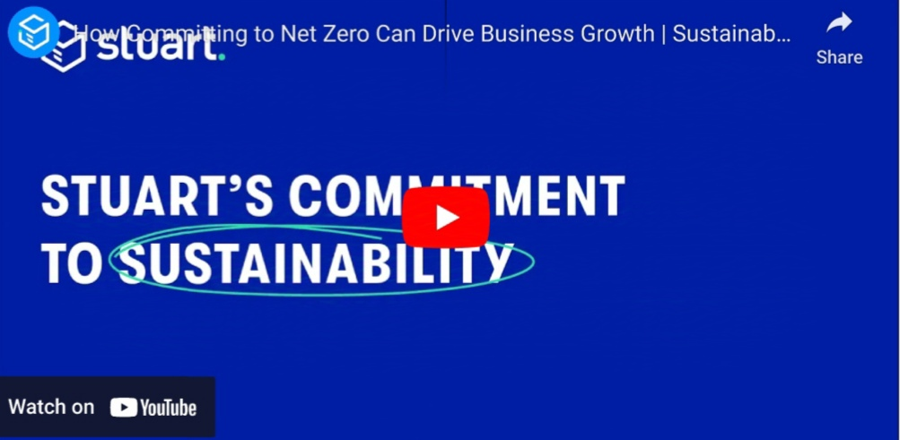
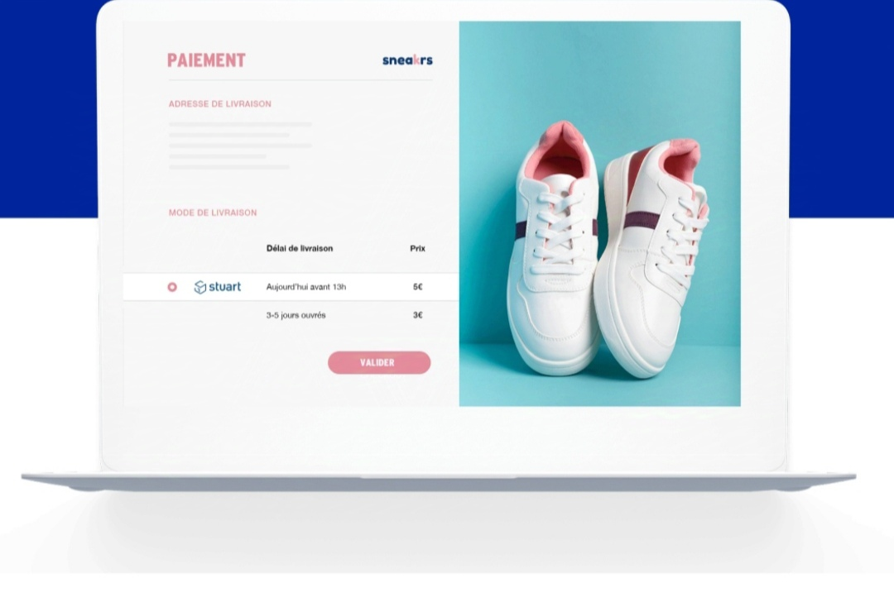
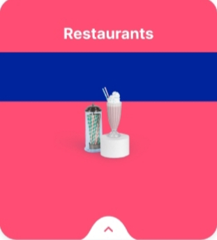
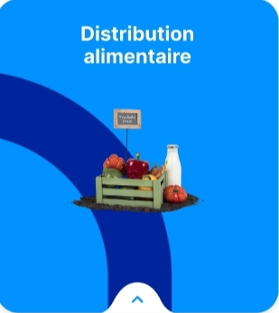
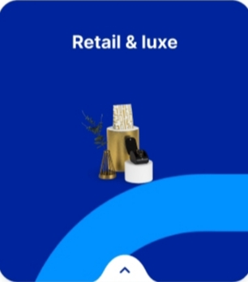
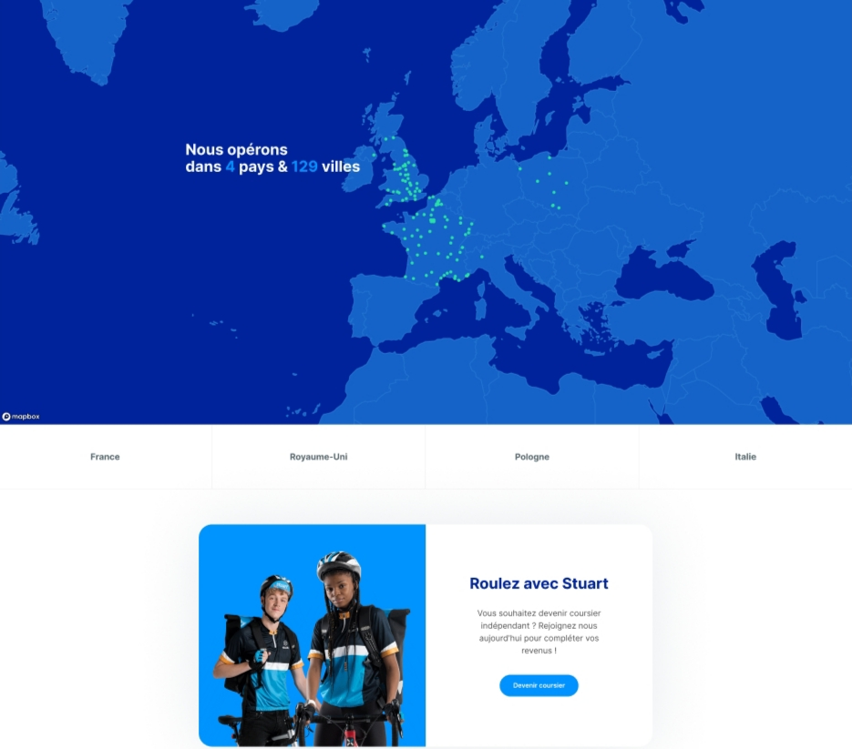
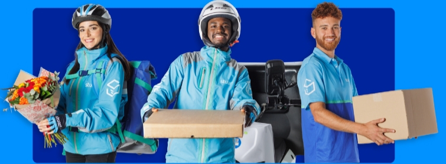

Une plateforme de livraison du dernier kilomètre rentable et rapide
Stuart se présente comme le partenaire idéal pour répondre aux besoins de livraison de chaque secteurs d'activité. Révolutionnez votre service de livraison grâce à vos solutions dédiées, vous assurant d'atteindre vos clients de manière rapide et fiable.
Coursier? inscrivez-vous ici

 Restauration
Distribution alimentaire
Retail & luxe
E-commerce
Restauration
Distribution alimentaire
Retail & luxe
E-commerce
L'ère de la livraison à la demande
La plateforme de livraison à la de,ande de Stuart révolutionne le transport le transport de marchandises en ville. Nous proposons aux commerces de toute tailles, tous secteurs confondus, des livraisons plus rapides et plus pratiques pour offrir à leurs clients une expérience unique, qui dépasse les standards d'aujourd'hui et définit ceux de demain.

Le développement durable chez Stuart
Notre mission parle d' elle même : nous dévelloppons une logistique urbaine durable pour le dernier kilomètre. Cela passe par la mise à jour d'une stratrégie globale pour accroître notre impact positif sur le climat, nos pqrtenqires, nos clients et notre écosystème. Nous déployons des flottes à faibles émissions et mettons notre technologie au service de la réduction des émissions de GSE de nos clients. Chez Stuart, l'impact est au coeur de toutes nos activités.
Stuart s'intègre avec Shopify
Ajouter l'application Shopify depuis pour offrir à vos clients une nouvelle option de livraison express depuis vos magasins. Concentrer vous sur votre entreprise pendant que Stuart prend soin de vos livraisons.
Rapidité et simplicité d'un simple clic
Tous les secteurs d'activité
Tous les points de retrait
Tous les types de transport
Technologie avancée


Nous offrons à tous les commerçants-restauration, distribution alimentaire, retrait, e-commerce, messagerie- la possibilité de proposer des livraisons express à leur clientèle
Nous livrons tout type de marchandises directement depuis des réseaux de magasins, entrepots, drives ou bureaux, sur simple demande
Nous connectons en te,ps-réel les commerçants et e-commerçants à plus grande flotte de coursiers indépendants géolocalisée -vélo, vélo cargo, véhicules motarisés
Nous proposons un suivi géolocalisé en temps-réel de tous les colis transportés, du point de retrait à la livraison, couplé à un système de notifications avancées par SMS
Nous avons la solution qu'il vous faut
Intégrer votre API à votre boutique en ligne pour proposer une livraison jour J ou J+1 a tous vos clients.

Nous collaborons avec tous les secteurs d'activité




On parle de nous dans la presse
Inspir'
Créée en France, en 2015, Stuart a été pensée pour révolutionner le transport marchandises en milieu urbain. Lire entretien avec Quentin Bachelle, Général manager France Stuart.
Lire l'article >
Forbes
Pour les acheteur en ligne, la fidelite a une marque est conditionnee par les delais de livraison. D'ici cinq ans, la livraison et les retours immediats seront la regle
Lire l'article >
alphr.com
Decouvrer Stuart, la societe de livraison dans l'heure en passe de revolutionner le secteur de la distribution. Stuart n'est pas une personnem, mais incarne la maniere dont tous les clients devraient etre servis
Lire l'article >
Lancez-vous
Donnez un nouveau souffle a vos livraison avec Stuart

Contacter le support Stuart
BUSINESS SOLUTIONS
Ship from store
Coursier express
SECTEUR D'ACTIVITE
Retauration
Distribution alimentaire
Retail & luxe
Messagerie
A PROPOS
A propos
Carriere
Developpement durable
Blog
Bibliotheque de ressources
Compliance
DEI chez Stuart
Conditions generales
Donnees personnelles
Mentions legales
Declaration relative aux cookies
Client Help centre
Indicateurs sur l'activite des coursiers
Index egalite femmes/hommes
Conditions generales Stuarts XL
Les modalites de rupture des realites commerciales
Suivez-nous
@ 2024 STUART